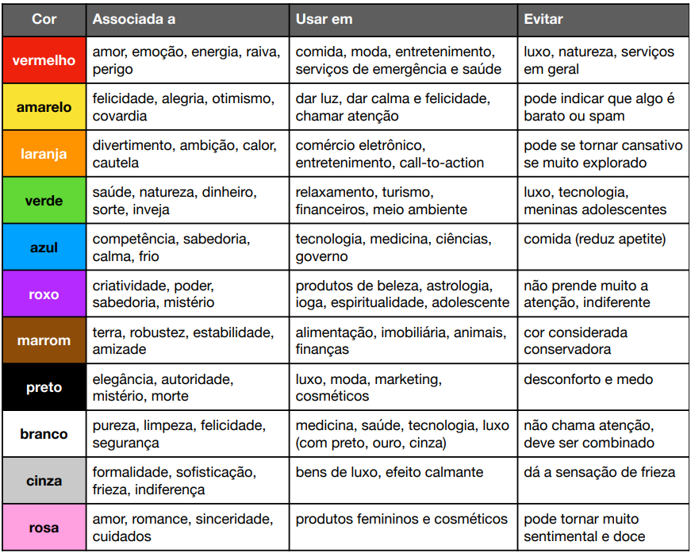
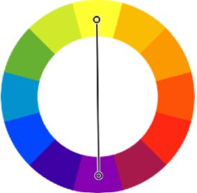
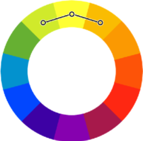
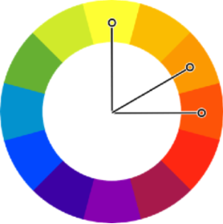

Fundo preto com texto branco quando tem muito texto
Azul, verde, amarelo, etc.
#0000ff - Azul
00 de vermelho, 00 de verde, 255(ff) de azul
rgb(0, 0, 255)
0 de vermelho, 0 de verde, 255 de azul
hsl(240, 100%, 50%)
Matriz, Saturação e Luminosidade (Hue, saturation and lightness)
Matriz: Tom da cor em graus do circulo cromático (0° - 360°)
Saturação:intensidade da cor medida em porcentagem (0% - 100%)
Brilho: O brilho da cor, també em porcentagem (0% - 100%)


